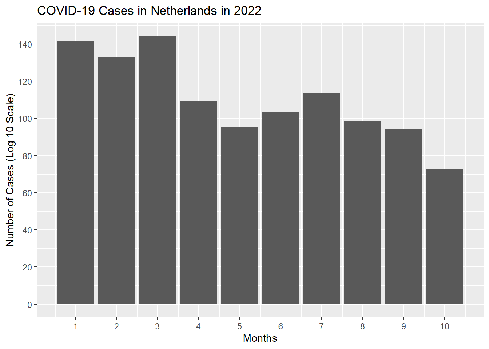
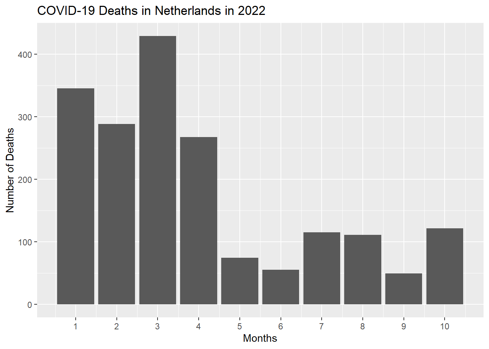

Parameritizing reports

The last couple of months, I have developed some skill in parameterizing reports. This skills allows me to generate dynamic, customizable reports which improves the flexibility and usability of data insights.
To demonstrate my skills in parameterizing reports, I have developed a project that focuses on the analysis of COVID-19 data. This project involves creating a parameterized report that displays the number of cases and deaths generated over the year for a specific country.
Establishing parameters
Before we start with the data wrangling and visualization of this report. We have to establish the needed parameters (Country, Year, Months) for this we have to write the following code in the YAML Header of the report:
title: "COVID-19 report for `r params$country` in `r params$year`"
output:
html_document:
theme: journal
highlight: tango
params: # Establising parameters
country: "Netherlands"
year: 2022
months: [1, 2, 3, 4, 5, 6, 7, 8, 9, 10, 11, 12]After this step we can start with the importing and the wrangling of the COVID data using the given parameters
Data Import
First, we need to import the COVID-19 data from the European Centre for Disease Prevention and Control (ECDC) dataset. This dataset contains daily reports of COVID-19 cases and deaths across various countries.
Data Wrangling
Next, we will process the imported data to filter it based on the parameters provided by the user. The parameters will include the country, year, and months of interest. This allows us to focus on the specific data needed for our analysis and visualizations.
# Process data
covid_data <- df %>% filter(countriesAndTerritories == params$country,
year == params$year,
month %in% params$months)In this step, we use the provided parameters to filter the data. This involves:
Country: Selecting data for the specified country.
Year: Filtering data for the given year.
Months: Including only the data for the specified months.
For this project we are generating a COVID-19 report for Netherlands for the year 2022 and for the months 1, 2, 3, 4, 5, 6, 7, 8, 9, 10, 11, 12.
Summary statistics
For this step we will included the next summary statistics in your report for a easier overview of the COVID-19 situation for the selected parameters:
We will use this statistics later in our report. After we have processed our data we can start with the plotting of the COVID cases and deaths in the given parameters
COVID-19 Cases
covid_data %>% ggplot(aes(x = month, y = log10(cases + 1))) +
geom_col(na.rm = T) +
scale_x_continuous(breaks = seq(1, max(12), by = 1)) +
scale_y_continuous(breaks = scales::pretty_breaks(n = 6)) +
labs(title = paste("COVID-19 Cases in", params$country, "in", params$year),
x = "Months",
y = "Number of Cases (Log 10 Scale)")
COVID-19 Deaths
covid_data %>% ggplot(aes(x = month, deaths)) +
geom_col(na.rm = T) +
scale_x_continuous(breaks = seq(1, max(12), by = 1)) +
scale_y_continuous(breaks = scales::pretty_breaks(n = 6)) +
labs(title = paste("COVID-19 Deaths in", params$country, "in", params$year),
x = "Months",
y = "Number of Deaths")
Summary Statistics
Total COVID-19 deaths = 1854
Average COVID-19 deaths per day = 6.3061224
Now our report is ready to visualize COVID-19 cases and deaths for the specified parameters, along with their summary statistics. This structured approach ensures that our report is comprehensive and effectively communicates the insights from the data analysis.
Are you interested to see the original report? Check my projects folder and search the folder “parameterized reports”. You can play with this report using other parameters which will result in different plots, so feel you free to try new parameters!